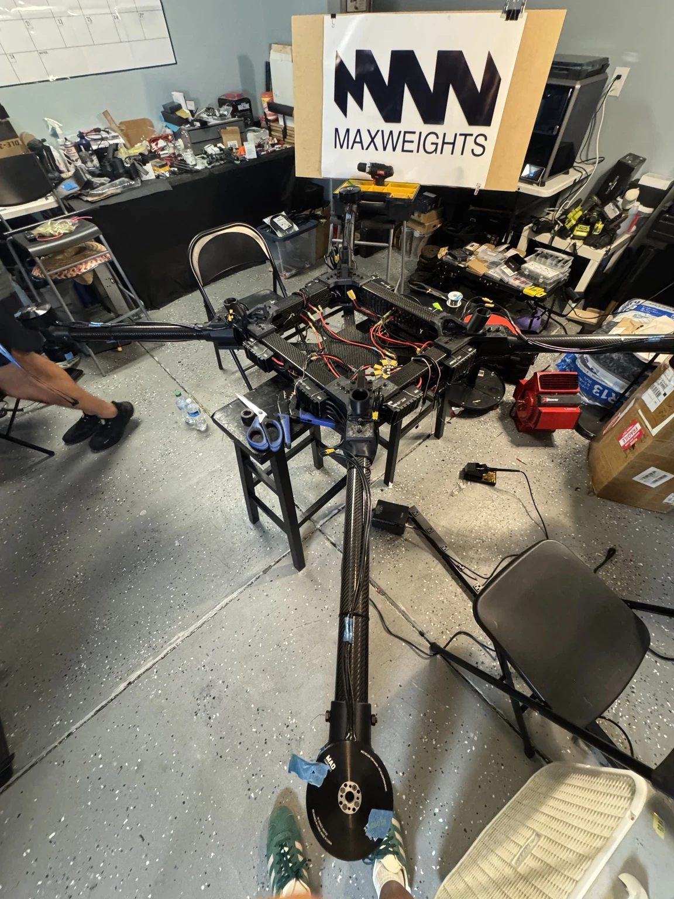

Mechanical assembly, electrical integration, flight-control setup, and hands-on field testing.
The aircraft on the test pad
2026 competition context
The Challenge
The DARPA Lift Challenge pushed teams to develop lightweight aircraft capable of carrying very large payloads relative to their own weight.
For our team, MaxWeights, the aircraft had to operate under a strict aircraft-weight limitation while carrying a payload of at least 110 lb and completing a multi-mile mission.
I joined MaxWeights as the team was building and testing a heavy-lift UAV for the DARPA Lift Challenge. The project required a lightweight aircraft capable of carrying a large payload while completing the required mission.
02 / Task
Support the aircraft, learn the systems
My role was to support the hands-on build, integration, testing, and troubleshooting of the aircraft while learning the flight-control and electrical systems required for a UAV of this scale.
03 / Action
Work directly on the integrated aircraft
I supported mechanical assembly, electrical integration, and flight-control setup. During testing, I worked directly on the aircraft, reviewed flight behavior with the team, and participated in troubleshooting and problem solving. I also worked with the team as we prepared for the DARPA event.

Build and integration in the workshopOur 60-second fully autonomous hover test during the DARPA Lift Challenge competition
04 / Result
A stronger understanding of real UAV behavior
I gained hands-on experience with a large-scale UAV, improved my understanding of flight controls and systems integration, and developed troubleshooting experience. Testing made the relationship between design decisions and actual aircraft behavior much clearer.
At the DARPA event, I saw teams approach the same problem with different aircraft architectures, materials, propulsion layouts, manufacturing strategies, and engineering tradeoffs. Comparing those approaches was a valuable part of the experience.